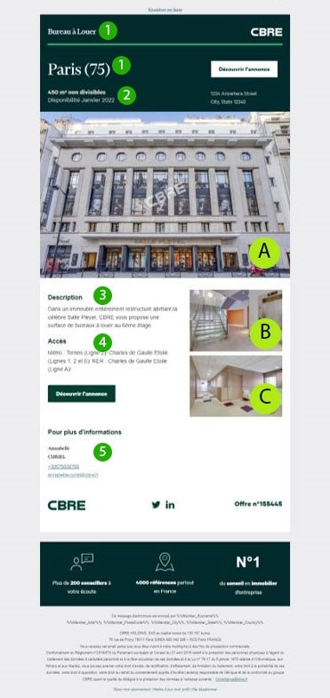

Le processus est simple, lorsqu’un consultant, ou agent immobilier souhaite faire une campagne sur l’une de ces annonces, celui-ci (ou son assistante commerciale) doit me contacter et formuler une demande écrite par mail une semaine avant la date souhaitée.
Tous nos emailings et mailings sont envoyés le mardi et le jeudi, cela signifie que pour un envoi le mardi de la semaine 2, la demande devra être formulée au minima le mardi de la semaine 1.
Pour que je puisse noter la campagne dans le planning, la demande doit respecter la nomenclature suivante :
- le n° d’offre
- un nom (nom de l’immeuble ou de la rue)
- un CDP (centre de profit)
- une typologie : bureau, entrepôt…
- la date souhaitée d’envoi
Pour simplifier le processus, il suffit que le consultant remplit le document suivant :
De plus, la demande doit également être accompagnée de la cible de la campagne, le fichier doit avoir un format spécifique, comme comme ci-dessous :
Le fichier cible peut être généré par Imap, un logiciel interne que nous utilisons à CBRE, mais également en faisant une demande à Alexandra TOURON dans laquelle il faudra préciser les critères de la cible souhaitée, par exemple, toucher toutes les entreprises à 5km de l’offre A.
Une fois avoir reçu les éléments cités ci-dessus, une réponse par mail avec la date validée de la campagne sera faite au consultant pour confirmer la date d’envoi.
À partir de là, si l’offre est en ligne et que tous les visuels souhaités ont bien été mis à jour, je peux générer le BAT, ou Bon à Tirer, pour que le consultant le valide.
Il prend la forme suivante :

Il y a généralement 3 visuels : la devanture du bâtiment (A), les parties communes (B) et les espaces intérieurs (C).
On retrouve également les informations principales de l’offre : le lieu et le type de contrat - location ou vente - (1), la surface du bien et sa date de disponibilité (2), une accroche avec les points forts de l’offre (3), les informations liées à l’accès (4), et le contact du consultant en charge de l’offre (5).
J’utilise la plateforme SalesForce Marketing Cloud pour générer ce BAT, nous fonctionnons avec comme base un template d’email HTML, il suffit ainsi de changer le numéro d’offre dans le code HTML pour que le BAT se génère automatiquement.
S’il n’y a pas de problèmes de mise à jour de visuels ou autre, il s’agit d’une tâche simple. Cependant, il est arrivé que je doive modifier le code pour que tout fonctionne correctement, ou en fonction des souhaits du consultant.
Si le BAT est validé par le consultant, la campagne pourra être programmée.
Une semaine après l’envoi de la campagne, je transmets le reporting au consultant, il regroupe toutes les statistiques de la campagne : le nombre d’ouvertures, de cliqueurs, le taux de délivrabilité, le nombre de désabonnements…
Par ailleurs, lorsqu’il y a un “cliqueur”, une personne qui clique sur l’un des CTA de l’emailing, une piste, ou lead, est générée automatiquement sur le compte Salesforce du consultant pour que celui-ci le recontacte dans une période raisonnable.
Il faut suivre la même démarche pour la formulation de demande que pour les campagnes emailings, une fois avoir reçu tous les éléments nécessaires je peux m’occuper du BAT.
Pour cela, j’utilise la plateforme MyElefant, et je crée une landing page qui prend la forme suivante : https://rsms.co/EzIDH5fI
J’utilise les informations que je peux trouver sur l’offre pour remplir cette landing page, cette dernière est insérée dans un SMS que je rédige, comme celui-ci :
De la même manière que pour les campagnes emailings, si le BAT est validé par le consultant, la campagne pourra être programmée.
Pour les mailings courriers :
Le processus pour les mailings diffère de celui des emailings ou des sms.
En effet, nous utilisons la plateforme GOCad, à l’inverse des autres campagnes, le consultant m’envoie le BAT, je le valide ou non, et lorsque tout est correct, la campagne peut partir à l’impression.
En plus de ces tâches hebdomadaires, je me suis vue confier plusieurs missions et petits projets.
Lors de mon arrivée, le projet concernant la refonte du site web cbre.fr avait déjà été lancée.
Mon premier contact concernant ce projet et ma première mission fût de remplir les “briefings form”. Il s’agit d’un document rédigé en anglais que nous devions remplir avec le contenu des pages que vous voulions, et qui était destiné à une équipe en Inde chargée de construire le site.
Notre ligne directive était de suivre le site corporate cbre.com des États-Unis et adapter au mieux avec le contenu de nos équipes en France.
Pour remplir ces briefings forms, nous avions accès à un “Module Library” qui regroupait toutes les présentations possibles des différents blocs d’une page, et aux fichiers envoyés par nos équipes qui détaillent le contenu qu’ils souhaitent avoir sur leur page présentant leur service.
Toujours pour le projet de refonte de notre site web, j’ai dû remettre à la charte tous les “Flashs” de nos régions, il s’agit de landing page que nous avons mis en place pour présenter et mettre en avant la présence de CBRE dans nos régions.
Il y en avait 14 à réadapter avec notre nouvelle charte graphique,
J’ai travaillé sur Ceros, un nouvel outil pour moi, le mode de fonctionnement ressemble à Figma, je me suis donc assez rapidement familiarisé avec l’outil.
L’une des difficultés avec Ceros est le fait que le mode responsive ne se fait pas automatiquement, une fois avoir terminé la version desktop, j’ai dû recommencer les versions mobiles.
Pour notre nouveau site corporate cbre.fr, j’ai également travaillé sur une carte interactive qui présente nos implantations en France.
La première version ressemble à ce que vous pouvez voir ci-dessous, il s’agit d’une carte assez simpliste, la seule fonctionnalité est le fait de pouvoir visiter le site CBRE correspondant à la ville à laquelle nous nous intéressons.
La deuxième version est plus travaillée, en effet, en cliquant sur le nom de la ville ou le point sur la carte, nous pouvons avoir accès aux informations de contact des franchisés CBRE avec la liste de nos implantations qui peut se dérouler en parallèle.
On peut aujourd'hui retrouver cette carte sur notre site cbre.fr.